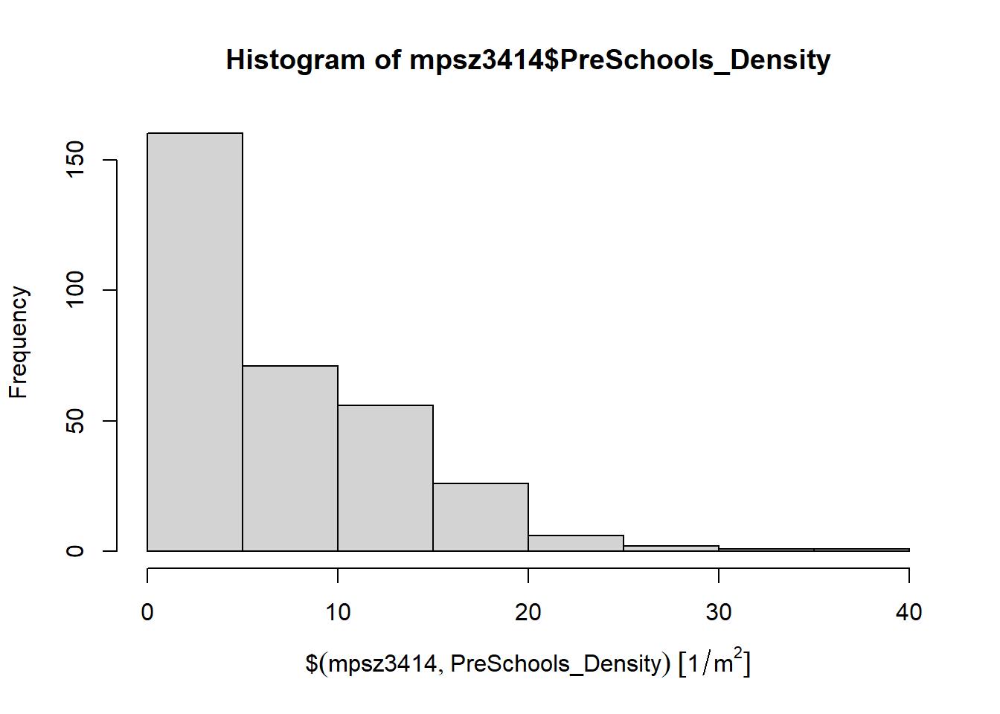
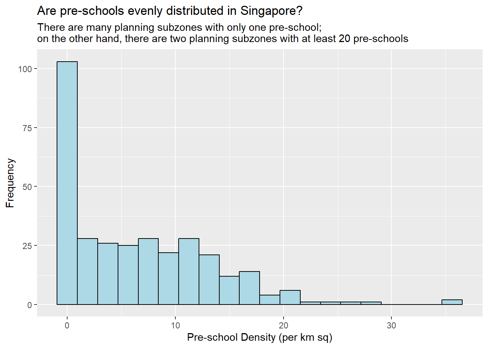
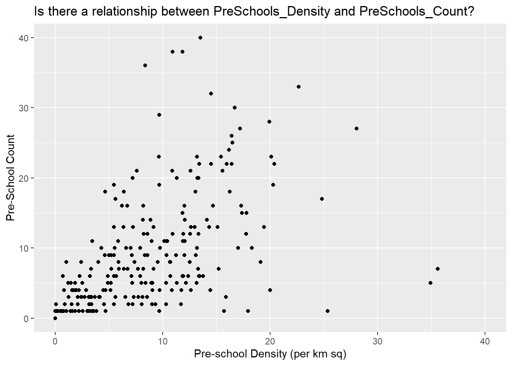

pacman::p_load(sf,tidyverse)Hands-on Exercise 1
Overview
This is the first hands-on exercise for ISSS624 Applied Geospatial Analytics. The first step is creating this webpage, and the subsequent steps are in data wrangling and choropleth mapping.
Getting Started
Webpage Creation
This webpage is created on RStudio using the quarto package. The package is installed using the following steps:
On RStudio > Tools > Install Packages > Type “quarto” in Packages field > Install to R/R-4.3.2/library
Data Acquisition
For this Hands-on Exercise, the following data sets are assembled from the sources as indicated:
| S/N | Name of Data Set | File type | Source | Extracted to (file directory) |
|---|---|---|---|---|
| 1 | Master Plan 2014 Subzone Boundary (Web) | SHP | data.gov.sg | /data/geospatial |
| 2 | Pre-Schools Location | KML | data.gov.sg | /data/geospatial |
| 3 | Cycling Path | SHP | LTA DataMall | /data/geospatial |
| 4 | Singapore Listings | CSV | Inside Airbnb | /data/aspatial |
Geospatial Data Wrangling
In this Hands-on Exercise, the following R packages will be used:
sffor importing, managing, and processing geospatial data;tidyverseto perform data science tasks such as importing, wrangling, and visualising data.
We will import the packages using the following code:
Importing Geospatial Data
We will use the st_read() function from the sf package to import the following Geospatial data:
| S/N | Name of Data Set | Format | Layer |
|---|---|---|---|
| 1 | Master Plan 2014 Subzone Boundary (Web) | SHP | Polygon feature layer |
| 2 | Pre-Schools Location | SHP | Line feature layer |
| 3 | Cycling Path | KML | Point feature layer |
Import Polygon Feature Data
Using the code below, we will import MP14_SUBZONE_WEB_PL shapefile into R as a polygon feature data frame. As the input geospatial data is in shapefile format, two arguments will be used:
dsnto define the data pathlayerto provide the shapefile name
mpsz = st_read(dsn = "data/geospatial",
layer = "MP14_SUBZONE_WEB_PL")Reading layer `MP14_SUBZONE_WEB_PL' from data source
`C:\Users\noel1\Documents\School\02. Special Sem 1\ISSS624 Geospatial Analysis\noelnomel\ISSS624\Hands_on_Ex\Hands_on_Ex01\data\geospatial'
using driver `ESRI Shapefile'
Simple feature collection with 323 features and 15 fields
Geometry type: MULTIPOLYGON
Dimension: XY
Bounding box: xmin: 2667.538 ymin: 15748.72 xmax: 56396.44 ymax: 50256.33
Projected CRS: SVY21As the dataset is in SHP format, the file extensions (.shp, .dbf, .prj, and .sbn) need not be included.
Running the code shows that there are 323 multipolygon features and 15 fields in the mpsz simple feature data frame. The mpsz data frame is using the SVY21 projected coordinates system.
Import Line Feature Data
Similarly, we will use the following code with the same arguments to import CyclingPath shapefile into R as a line feature data frame.
cyclingpath = st_read(dsn = "data/geospatial",
layer = "CyclingPathGazette")Reading layer `CyclingPathGazette' from data source
`C:\Users\noel1\Documents\School\02. Special Sem 1\ISSS624 Geospatial Analysis\noelnomel\ISSS624\Hands_on_Ex\Hands_on_Ex01\data\geospatial'
using driver `ESRI Shapefile'
Simple feature collection with 2558 features and 2 fields
Geometry type: MULTILINESTRING
Dimension: XY
Bounding box: xmin: 11854.32 ymin: 28347.98 xmax: 42626.09 ymax: 48948.15
Projected CRS: SVY21Running the code shows that there are 2558 linestring features and 2 fields in the cyclingpath linestring feature data frame, which is also using the SVY21 projected coordinates system.
Import Point Feature Data
The following code is used to import the PreSchoolsLocation file. As the data is in KML format, the full filepath has to be provided:
preschools = st_read(dsn = "data/geospatial/PreSchoolsLocation.kml")Reading layer `PRESCHOOLS_LOCATION' from data source
`C:\Users\noel1\Documents\School\02. Special Sem 1\ISSS624 Geospatial Analysis\noelnomel\ISSS624\Hands_on_Ex\Hands_on_Ex01\data\geospatial\PreSchoolsLocation.kml'
using driver `KML'
Simple feature collection with 2290 features and 2 fields
Geometry type: POINT
Dimension: XYZ
Bounding box: xmin: 103.6878 ymin: 1.247759 xmax: 103.9897 ymax: 1.462134
z_range: zmin: 0 zmax: 0
Geodetic CRS: WGS 84As the full filepath is defined, we need not indicate the layer to be imported in the code.
Running the code shows that there are 2290 point features and 2 fields in the preschools point feature data frame. The preschools data frame is using the WGS84 coordinates system.
Checking the Contents of a Simple Feature data frame
There are different ways to have a quick view of the contents of a simple feature data frame. In this section, we will explore the following methods:
st_geometry()glimpse()head()
Using st_geometry()
st_geometry returns an object of class sfc, a list-column with geometries.
st_geometry(mpsz)Geometry set for 323 features
Geometry type: MULTIPOLYGON
Dimension: XY
Bounding box: xmin: 2667.538 ymin: 15748.72 xmax: 56396.44 ymax: 50256.33
Projected CRS: SVY21
First 5 geometries:Running the code above shows minimal information about the feature, such as the geometry type, bounding box, and the coordinate system of the data. The first 5 geometries are also displayed.
Using glimpse()
Using glimpse() allows us to see all columns of the data (but displayed in rows) and the type of data stored in field. The values in each column are also displayed following each column header.
glimpse(mpsz)Rows: 323
Columns: 16
$ OBJECTID <int> 1, 2, 3, 4, 5, 6, 7, 8, 9, 10, 11, 12, 13, 14, 15, 16, 17, …
$ SUBZONE_NO <int> 1, 1, 3, 8, 3, 7, 9, 2, 13, 7, 12, 6, 1, 5, 1, 1, 3, 2, 2, …
$ SUBZONE_N <chr> "MARINA SOUTH", "PEARL'S HILL", "BOAT QUAY", "HENDERSON HIL…
$ SUBZONE_C <chr> "MSSZ01", "OTSZ01", "SRSZ03", "BMSZ08", "BMSZ03", "BMSZ07",…
$ CA_IND <chr> "Y", "Y", "Y", "N", "N", "N", "N", "Y", "N", "N", "N", "N",…
$ PLN_AREA_N <chr> "MARINA SOUTH", "OUTRAM", "SINGAPORE RIVER", "BUKIT MERAH",…
$ PLN_AREA_C <chr> "MS", "OT", "SR", "BM", "BM", "BM", "BM", "SR", "QT", "QT",…
$ REGION_N <chr> "CENTRAL REGION", "CENTRAL REGION", "CENTRAL REGION", "CENT…
$ REGION_C <chr> "CR", "CR", "CR", "CR", "CR", "CR", "CR", "CR", "CR", "CR",…
$ INC_CRC <chr> "5ED7EB253F99252E", "8C7149B9EB32EEFC", "C35FEFF02B13E0E5",…
$ FMEL_UPD_D <date> 2014-12-05, 2014-12-05, 2014-12-05, 2014-12-05, 2014-12-05…
$ X_ADDR <dbl> 31595.84, 28679.06, 29654.96, 26782.83, 26201.96, 25358.82,…
$ Y_ADDR <dbl> 29220.19, 29782.05, 29974.66, 29933.77, 30005.70, 29991.38,…
$ SHAPE_Leng <dbl> 5267.381, 3506.107, 1740.926, 3313.625, 2825.594, 4428.913,…
$ SHAPE_Area <dbl> 1630379.27, 559816.25, 160807.50, 595428.89, 387429.44, 103…
$ geometry <MULTIPOLYGON [m]> MULTIPOLYGON (((31495.56 30..., MULTIPOLYGON (…Running the code above shows that FMEL_UPD_D is in date data type, while X_ADDR, Y_ADDR, SHAPE_Leng, and SHAPE_Area are in double-precision values.
Using head()
Using head() shows the first n records to display for each field, while also displaying information regarding the geometric features.
head(mpsz, n=5)Simple feature collection with 5 features and 15 fields
Geometry type: MULTIPOLYGON
Dimension: XY
Bounding box: xmin: 25867.68 ymin: 28369.47 xmax: 32362.39 ymax: 30435.54
Projected CRS: SVY21
OBJECTID SUBZONE_NO SUBZONE_N SUBZONE_C CA_IND PLN_AREA_N
1 1 1 MARINA SOUTH MSSZ01 Y MARINA SOUTH
2 2 1 PEARL'S HILL OTSZ01 Y OUTRAM
3 3 3 BOAT QUAY SRSZ03 Y SINGAPORE RIVER
4 4 8 HENDERSON HILL BMSZ08 N BUKIT MERAH
5 5 3 REDHILL BMSZ03 N BUKIT MERAH
PLN_AREA_C REGION_N REGION_C INC_CRC FMEL_UPD_D X_ADDR
1 MS CENTRAL REGION CR 5ED7EB253F99252E 2014-12-05 31595.84
2 OT CENTRAL REGION CR 8C7149B9EB32EEFC 2014-12-05 28679.06
3 SR CENTRAL REGION CR C35FEFF02B13E0E5 2014-12-05 29654.96
4 BM CENTRAL REGION CR 3775D82C5DDBEFBD 2014-12-05 26782.83
5 BM CENTRAL REGION CR 85D9ABEF0A40678F 2014-12-05 26201.96
Y_ADDR SHAPE_Leng SHAPE_Area geometry
1 29220.19 5267.381 1630379.3 MULTIPOLYGON (((31495.56 30...
2 29782.05 3506.107 559816.2 MULTIPOLYGON (((29092.28 30...
3 29974.66 1740.926 160807.5 MULTIPOLYGON (((29932.33 29...
4 29933.77 3313.625 595428.9 MULTIPOLYGON (((27131.28 30...
5 30005.70 2825.594 387429.4 MULTIPOLYGON (((26451.03 30...Running the code above displayed information on the geometric features and the first 5 records in the data set.
Plotting the Geospatial Data
We will use the plot() function to visualise the geospatial features.
plot(mpsz)
The default plot of an
sfobject is a multi-plot of all attributes, up to a reasonable maximum.
We can choose to plot only the geometry as shown below:
plot(st_geometry(mpsz))
We can also choose to plot the sf object using a specific attribute:
plot(mpsz["PLN_AREA_N"])
Projection Transformation
In order to perform geoprocessing using two different geospatial data sets, both data sets should be projected using similar coordinate systems.
We will conduct projection transformation to project a simple feature data frame from one coordinate system to another.
Assigning EPSG Code to Simple Feature Data Frame
One common issue that happens when geospatial data is imported into R is that the coordinate system of the source data is wrongly assigned during import.
For example, examining the mpsz simple feature data frame using st_crs() shows that:
st_crs(mpsz)Coordinate Reference System:
User input: SVY21
wkt:
PROJCRS["SVY21",
BASEGEOGCRS["SVY21[WGS84]",
DATUM["World Geodetic System 1984",
ELLIPSOID["WGS 84",6378137,298.257223563,
LENGTHUNIT["metre",1]],
ID["EPSG",6326]],
PRIMEM["Greenwich",0,
ANGLEUNIT["Degree",0.0174532925199433]]],
CONVERSION["unnamed",
METHOD["Transverse Mercator",
ID["EPSG",9807]],
PARAMETER["Latitude of natural origin",1.36666666666667,
ANGLEUNIT["Degree",0.0174532925199433],
ID["EPSG",8801]],
PARAMETER["Longitude of natural origin",103.833333333333,
ANGLEUNIT["Degree",0.0174532925199433],
ID["EPSG",8802]],
PARAMETER["Scale factor at natural origin",1,
SCALEUNIT["unity",1],
ID["EPSG",8805]],
PARAMETER["False easting",28001.642,
LENGTHUNIT["metre",1],
ID["EPSG",8806]],
PARAMETER["False northing",38744.572,
LENGTHUNIT["metre",1],
ID["EPSG",8807]]],
CS[Cartesian,2],
AXIS["(E)",east,
ORDER[1],
LENGTHUNIT["metre",1,
ID["EPSG",9001]]],
AXIS["(N)",north,
ORDER[2],
LENGTHUNIT["metre",1,
ID["EPSG",9001]]]]The mpsz data frame is projected to SVY21 but the code above reveals that EPSG is 9001 when the correct EPSG code for SVY21 is 3414.
We will use st_set_crs() from the sf package to assign EPSG code 3414 to the mpsz data frame.
mpsz3414 <- st_set_crs(mpsz,3414)Now to confirm that mpsz3414 is assigned the correct EPSG code, we will run the following code, which shows the EPSG code as 3414.
st_crs(mpsz3414)Coordinate Reference System:
User input: EPSG:3414
wkt:
PROJCRS["SVY21 / Singapore TM",
BASEGEOGCRS["SVY21",
DATUM["SVY21",
ELLIPSOID["WGS 84",6378137,298.257223563,
LENGTHUNIT["metre",1]]],
PRIMEM["Greenwich",0,
ANGLEUNIT["degree",0.0174532925199433]],
ID["EPSG",4757]],
CONVERSION["Singapore Transverse Mercator",
METHOD["Transverse Mercator",
ID["EPSG",9807]],
PARAMETER["Latitude of natural origin",1.36666666666667,
ANGLEUNIT["degree",0.0174532925199433],
ID["EPSG",8801]],
PARAMETER["Longitude of natural origin",103.833333333333,
ANGLEUNIT["degree",0.0174532925199433],
ID["EPSG",8802]],
PARAMETER["Scale factor at natural origin",1,
SCALEUNIT["unity",1],
ID["EPSG",8805]],
PARAMETER["False easting",28001.642,
LENGTHUNIT["metre",1],
ID["EPSG",8806]],
PARAMETER["False northing",38744.572,
LENGTHUNIT["metre",1],
ID["EPSG",8807]]],
CS[Cartesian,2],
AXIS["northing (N)",north,
ORDER[1],
LENGTHUNIT["metre",1]],
AXIS["easting (E)",east,
ORDER[2],
LENGTHUNIT["metre",1]],
USAGE[
SCOPE["Cadastre, engineering survey, topographic mapping."],
AREA["Singapore - onshore and offshore."],
BBOX[1.13,103.59,1.47,104.07]],
ID["EPSG",3414]]Transform Projection of preschools from WGS84 to SVY21
As geographic coordinate system is not appropriate for use with analysis that requires distance and/or area measurements, it may be necessary to transform such data to projected coordinate system.
For example, the preschools simple feature data frame is using WGS84 geographic coordinate system.
st_geometry(preschools)Geometry set for 2290 features
Geometry type: POINT
Dimension: XYZ
Bounding box: xmin: 103.6878 ymin: 1.247759 xmax: 103.9897 ymax: 1.462134
z_range: zmin: 0 zmax: 0
Geodetic CRS: WGS 84
First 5 geometries:We will have to reproject preschools from the existing system to SVY21 mathematically, which can be achieved through st_transform(). st_set_crs() only replaces the crs and does not reproject the data.
preschools3414 <- st_transform(preschools,crs=3414)Now to confirm that preschools3414 is using the SVY21 system, we will run the following code:
st_geometry(preschools3414)Geometry set for 2290 features
Geometry type: POINT
Dimension: XYZ
Bounding box: xmin: 11810.03 ymin: 25596.33 xmax: 45404.24 ymax: 49300.88
z_range: zmin: 0 zmax: 0
Projected CRS: SVY21 / Singapore TM
First 5 geometries:It can be observed that preschools3414 is now using SVY21. Furthermore, it can be observed that the values in Bounding box are greater than the decimal degree range of 0 to 360 commonly used by many geographic coordinate systems.
Importing and Converting Aspatial Data
Importing Aspatial Data
The listings.csv file downloaded from Inside Airbnb is a aspatial dataset as it does not contain geospatial data but it has fields that capture the x- and y-coordinates of the data points.
We will import the CSV file into R, save it as a tibble data frame, before converting it to a simple feature data frame.
listings <- read_csv("data/aspatial/listings.csv")We will use the following code to examine if the data file was imported correctly:
list(listings)[[1]]
# A tibble: 3,483 × 75
id listing_url scrape_id last_scraped source name description
<dbl> <chr> <dbl> <date> <chr> <chr> <chr>
1 71609 https://www.airbnb.co… 2.02e13 2023-09-23 previ… Vill… For 3 room…
2 71896 https://www.airbnb.co… 2.02e13 2023-09-23 previ… Home… <b>The spa…
3 71903 https://www.airbnb.co… 2.02e13 2023-09-23 previ… Home… Like your …
4 275343 https://www.airbnb.co… 2.02e13 2023-09-23 city … Rent… **IMPORTAN…
5 275344 https://www.airbnb.co… 2.02e13 2023-09-23 city … Rent… Lovely hom…
6 289234 https://www.airbnb.co… 2.02e13 2023-09-23 previ… Home… This whole…
7 294281 https://www.airbnb.co… 2.02e13 2023-09-23 city … Rent… I have 3 b…
8 324945 https://www.airbnb.co… 2.02e13 2023-09-23 city … Rent… **IMPORTAN…
9 330095 https://www.airbnb.co… 2.02e13 2023-09-23 city … Rent… **IMPORTAN…
10 369141 https://www.airbnb.co… 2.02e13 2023-09-23 city … Plac… A room in …
# ℹ 3,473 more rows
# ℹ 68 more variables: neighborhood_overview <chr>, picture_url <chr>,
# host_id <dbl>, host_url <chr>, host_name <chr>, host_since <date>,
# host_location <chr>, host_about <chr>, host_response_time <chr>,
# host_response_rate <chr>, host_acceptance_rate <chr>,
# host_is_superhost <lgl>, host_thumbnail_url <chr>, host_picture_url <chr>,
# host_neighbourhood <chr>, host_listings_count <dbl>, …The output shows that the listings tibble data frame consists of 3,483 records and 75 columns. The latitude and longitude fields will be used for the next step. It is observed that both fields are in decimal degree format; we could guess that the data is using WGS84 geographic coordinate system.
Converting Aspatial Data
We will use the st_as_sf() function from the sf package to convert listings tibble data into a simple feature data frame.
listings_sf <- st_as_sf(listings,
coords = c("longitude","latitude"),
crs=4326) %>%
st_transform(crs=3414)the
coordsargument takes x-coordinates followed by y-coordinatesEPSG 4326 refers to the WSG84 geographic coordinate system
%>%is used to nestst_transform()to reproject the newly created simple feature data frame into SVY21 projected coordinate system.
glimpse(listings_sf)Rows: 3,483
Columns: 74
$ id <dbl> 71609, 71896, 71903, 2753…
$ listing_url <chr> "https://www.airbnb.com/r…
$ scrape_id <dbl> 2.023092e+13, 2.023092e+1…
$ last_scraped <date> 2023-09-23, 2023-09-23, …
$ source <chr> "previous scrape", "previ…
$ name <chr> "Villa in Singapore · ★4.…
$ description <chr> "For 3 rooms.Book room 1&…
$ neighborhood_overview <chr> NA, NA, "Quiet and view o…
$ picture_url <chr> "https://a0.muscache.com/…
$ host_id <dbl> 367042, 367042, 367042, 1…
$ host_url <chr> "https://www.airbnb.com/u…
$ host_name <chr> "Belinda", "Belinda", "Be…
$ host_since <date> 2011-01-29, 2011-01-29, …
$ host_location <chr> "Singapore", "Singapore",…
$ host_about <chr> "Hi My name is Belinda -H…
$ host_response_time <chr> "within a few hours", "wi…
$ host_response_rate <chr> "100%", "100%", "100%", "…
$ host_acceptance_rate <chr> "100%", "100%", "100%", "…
$ host_is_superhost <lgl> FALSE, FALSE, FALSE, FALS…
$ host_thumbnail_url <chr> "https://a0.muscache.com/…
$ host_picture_url <chr> "https://a0.muscache.com/…
$ host_neighbourhood <chr> "Tampines", "Tampines", "…
$ host_listings_count <dbl> 5, 5, 5, 52, 52, 5, 7, 52…
$ host_total_listings_count <dbl> 15, 15, 15, 65, 65, 15, 8…
$ host_verifications <chr> "['email', 'phone']", "['…
$ host_has_profile_pic <lgl> TRUE, TRUE, TRUE, TRUE, T…
$ host_identity_verified <lgl> TRUE, TRUE, TRUE, TRUE, T…
$ neighbourhood <chr> NA, NA, "Singapore, Singa…
$ neighbourhood_cleansed <chr> "Tampines", "Tampines", "…
$ neighbourhood_group_cleansed <chr> "East Region", "East Regi…
$ property_type <chr> "Private room in villa", …
$ room_type <chr> "Private room", "Private …
$ accommodates <dbl> 3, 1, 2, 1, 1, 4, 2, 1, 1…
$ bathrooms <lgl> NA, NA, NA, NA, NA, NA, N…
$ bathrooms_text <chr> "1 private bath", "Shared…
$ bedrooms <dbl> NA, NA, NA, NA, NA, 3, NA…
$ beds <dbl> 3, 1, 2, 1, 1, 5, 1, 1, 1…
$ amenities <chr> "[\"Private backyard \\u2…
$ price <chr> "$150.00", "$80.00", "$80…
$ minimum_nights <dbl> 92, 92, 92, 60, 60, 92, 9…
$ maximum_nights <dbl> 365, 365, 365, 999, 999, …
$ minimum_minimum_nights <dbl> 92, 92, 92, 60, 60, 92, 9…
$ maximum_minimum_nights <dbl> 92, 92, 92, 60, 60, 92, 9…
$ minimum_maximum_nights <dbl> 1125, 1125, 1125, 1125, 1…
$ maximum_maximum_nights <dbl> 1125, 1125, 1125, 1125, 1…
$ minimum_nights_avg_ntm <dbl> 92, 92, 92, 60, 60, 92, 9…
$ maximum_nights_avg_ntm <dbl> 1125, 1125, 1125, 1125, 1…
$ calendar_updated <lgl> NA, NA, NA, NA, NA, NA, N…
$ has_availability <lgl> TRUE, TRUE, TRUE, TRUE, T…
$ availability_30 <dbl> 28, 28, 28, 1, 30, 28, 30…
$ availability_60 <dbl> 58, 58, 58, 1, 60, 58, 60…
$ availability_90 <dbl> 88, 88, 88, 1, 90, 88, 90…
$ availability_365 <dbl> 89, 89, 89, 275, 274, 89,…
$ calendar_last_scraped <date> 2023-09-23, 2023-09-23, …
$ number_of_reviews <dbl> 20, 24, 47, 22, 17, 12, 1…
$ number_of_reviews_ltm <dbl> 0, 0, 0, 0, 3, 0, 0, 1, 3…
$ number_of_reviews_l30d <dbl> 0, 0, 0, 0, 0, 0, 0, 1, 1…
$ first_review <date> 2011-12-19, 2011-07-30, …
$ last_review <date> 2020-01-17, 2019-10-13, …
$ review_scores_rating <dbl> 4.44, 4.16, 4.41, 4.40, 4…
$ review_scores_accuracy <dbl> 4.37, 4.22, 4.39, 4.16, 4…
$ review_scores_cleanliness <dbl> 4.00, 4.09, 4.52, 4.26, 4…
$ review_scores_checkin <dbl> 4.63, 4.43, 4.63, 4.47, 4…
$ review_scores_communication <dbl> 4.78, 4.43, 4.64, 4.42, 4…
$ review_scores_location <dbl> 4.26, 4.17, 4.50, 4.53, 4…
$ review_scores_value <dbl> 4.32, 4.04, 4.36, 4.63, 4…
$ license <chr> NA, NA, NA, "S0399", "S03…
$ instant_bookable <lgl> FALSE, FALSE, FALSE, TRUE…
$ calculated_host_listings_count <dbl> 5, 5, 5, 52, 52, 5, 7, 52…
$ calculated_host_listings_count_entire_homes <dbl> 0, 0, 0, 1, 1, 0, 1, 1, 1…
$ calculated_host_listings_count_private_rooms <dbl> 5, 5, 5, 51, 51, 5, 6, 51…
$ calculated_host_listings_count_shared_rooms <dbl> 0, 0, 0, 0, 0, 0, 0, 0, 0…
$ reviews_per_month <dbl> 0.14, 0.16, 0.31, 0.17, 0…
$ geometry <POINT [m]> POINT (41972.5 3639…It can be observed that a new column labelled geometry has been added while the longitude and latitude columns have been dropped from the listings_sf data frame.
Geoprocessing with sf package
In addition to the functions explored above, the sf package also offers a wide range of geoprocessing functions, also called GIS analysis.
We will explore the use of buffering and point in polygon count in this section.
Buffering
Scenario:
The authorities are planning to upgrade existing cycling paths and they need to acquire 5 metres of reserved land on both sides of existing cycling paths. You are tasked to determine the extent of land that needs to be acquired and its total area.
We will derive the solution using st_buffer() to compute the 5-metre buffer around the current cycling paths.
buffer_cycling <- st_buffer(cyclingpath,dist=5, nQuadSegs = 30)We will then calculate the area of the buffers using this code:
buffer_cycling$AREA <- st_area(buffer_cycling)To derive the total area of land involved in this plan, we will use the sum() function:
sum(buffer_cycling$AREA)1774367 [m^2]Point-in-Polygon Count
Scenario:
You are tasked to find out the number of pre-schools in each Planning Subzone.
This can be achieved by combining the lengths() function and the st_intersects() function as shown in the code below. The st_instersects() function identifies pre-schools located in each Planning Subzone while the lengths() function counts the number of pre-schools that are found in each Planning Subzone.
mpsz3414$'PreSchools_Count' <- lengths(st_intersects(mpsz3414,preschools3414))
st_intersection(): Returns a geometry representing the point-set intersection of two geometries.
st_intersects(): Returnstrueif two geometries intersect (i.e. if they have any point in common).
Next, we will check the summary statistics of the newly derived field using summary() as shown below:
summary(mpsz3414$"PreSchools_Count") Min. 1st Qu. Median Mean 3rd Qu. Max.
0.00 0.00 4.00 7.09 10.00 72.00 We will use top_n() from the dplyr package to display the Planning Subzone with the highest number of pre-schools:
top_n(mpsz3414,1,PreSchools_Count)Simple feature collection with 1 feature and 16 fields
Geometry type: MULTIPOLYGON
Dimension: XY
Bounding box: xmin: 39655.33 ymin: 35966 xmax: 42940.57 ymax: 38622.37
Projected CRS: SVY21 / Singapore TM
OBJECTID SUBZONE_NO SUBZONE_N SUBZONE_C CA_IND PLN_AREA_N PLN_AREA_C
1 189 2 TAMPINES EAST TMSZ02 N TAMPINES TM
REGION_N REGION_C INC_CRC FMEL_UPD_D X_ADDR Y_ADDR SHAPE_Leng
1 EAST REGION ER 21658EAAF84F4D8D 2014-12-05 41122.55 37392.39 10180.62
SHAPE_Area geometry PreSchools_Count
1 4339824 MULTIPOLYGON (((42196.76 38... 72Calculate Density
Scenario:
You are tasked to determine the density of pre-schools by Planning Subzone.
We can do this by first deriving the area of each Planning Subzone using st_area() from the sf package.
mpsz3414$Area <- mpsz3414 %>%
st_area()Next, we use the mutate() function from the dplyr package to compute the density:
mpsz3414 <- mpsz3414 %>%
mutate('PreSchools_Density' = PreSchools_Count/Area * 1000000)Lastly, we can check that the fields are computed correctly by displaying the top 2 Planning Subzones with the highest pre-school density.
top_n(mpsz3414,2,PreSchools_Density)Simple feature collection with 2 features and 18 fields
Geometry type: MULTIPOLYGON
Dimension: XY
Bounding box: xmin: 26864.99 ymin: 28623.75 xmax: 29976.93 ymax: 45653.61
Projected CRS: SVY21 / Singapore TM
OBJECTID SUBZONE_NO SUBZONE_N SUBZONE_C CA_IND PLN_AREA_N PLN_AREA_C
1 27 8 CECIL DTSZ08 Y DOWNTOWN CORE DT
2 278 3 MANDAI ESTATE MDSZ03 N MANDAI MD
REGION_N REGION_C INC_CRC FMEL_UPD_D X_ADDR Y_ADDR
1 CENTRAL REGION CR 65AA82AF6F4D925D 2014-12-05 29730.2 29011.33
2 NORTH REGION NR F6266F7368DBB9AB 2014-12-05 27082.7 45367.46
SHAPE_Leng SHAPE_Area geometry PreSchools_Count
1 2116.095 196619.9 MULTIPOLYGON (((29808.18 28... 7
2 1633.708 143137.9 MULTIPOLYGON (((27119.56 45... 5
Area PreSchools_Density
1 196619.9 [m^2] 35.60169 [1/m^2]
2 143137.9 [m^2] 34.93134 [1/m^2]Exploratory Data Analysis (EDA)
We will explore the use of ggplot2 functions to create functional statistical graphs from geospatial data for EDA purposes.
Firstly, we will plot a histogram using the hist() function to reveal the distribution of PreSchools_Density:
hist(mpsz3414$PreSchools_Density)
Using the hist() function is straightforward but it provides limited room for customisation of the plots. Next, we will explore using ggplot2 functions to plot a customisable histogram:
ggplot(data = mpsz3414,
aes(x = as.numeric(PreSchools_Density)))+
geom_histogram(bins = 20, color = "black", fill = "lightblue")+
labs(title = "Are pre-schools evenly distributed in Singapore?",
subtitle = "There are many planning subzones with only one pre-school; \non the other hand, there are two planning subzones with at least 20 pre-schools",
x = 'Pre-school Density (per km sq)',
y = 'Frequency')
Next, we will use ggplot2 functions to plot a scatterplot to show the relationship between PreSchools_Density and PreSchools_Count:
ggplot(data = mpsz3414,
aes(y = PreSchools_Count,
x = as.numeric(PreSchools_Density))) +
geom_point(color = "black", fill = "lightblue") +
xlim(0,40) +
ylim(0,40) +
labs(title = "Is there a relationship between PreSchools_Density and PreSchools_Count?",
x = 'Pre-school Density (per km sq)',
y = 'Pre-School Count')